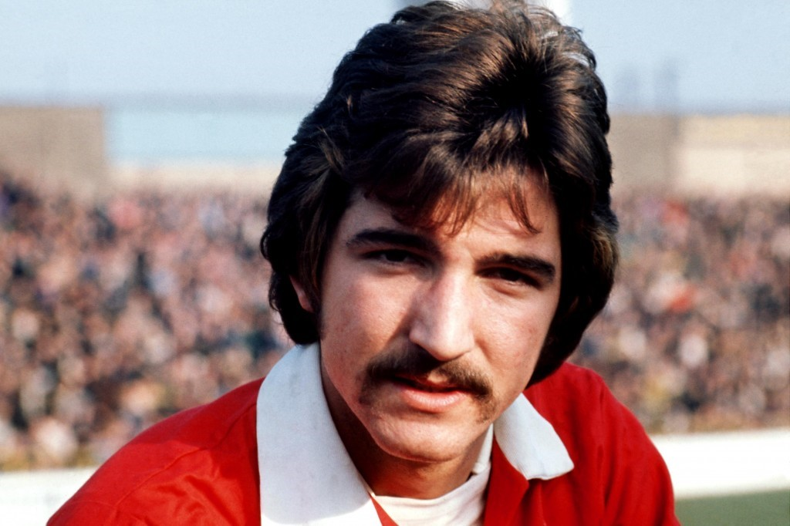

Chương 12

berdeen: Một vùng đất lạnh lẽo, nằm trơ trọi ở miền Bắc Scotland, cách Glasgow đến 150 dặm. Từ Aberdeen đi đến Đan Mạch và Na Uy còn gần hơn đến London, thủ đô Vương Quốc Anh.Pittodrie, sân nhà của Aberdeen FC, nằm gần bờ biển, hứng hết những cơn gió lạnh từ đại dương thổi vào. Khi đông về, mỗi lần đến SVĐ, các fan hâm mộ ai cũng phải đội mũ lông, choàng khăn kín cổ, thậm chí đem theo chăn đệm để quấn quanh người.
Tháng sáu, 1978, khi Alex Ferguson tới Aberdeen cùng trợ lý Pat Stanton, giới truyền thông chẳng mấy quan tâm đến ông. Họ còn đang bận theo dõi những diễn tiến ở Ibrox, nơi John Greig vừa lên thế Jock Wallace, và đặc biệt là ở Celtic Park, nơi huyền thoại Jock Stein bị buộc phải từ nhiệm. Không dám sa thải người đã đem về cho CLB 10 chức VĐQG, 8 Cúp QG, 6 Cúp LĐ, cùng danh hiệu vô địch châu Âu vô tiền khoáng hậu trong lịch sử, Celtic thuyết phục Stein từ chức, với hứa hẹn sẽ giành cho ông một vị trí trong ban lãnh đạo. Khi Stein từ chức rồi, họ nuốt lời, chỉ bổ nhiệm ông vào chức vụ chuyên “ngồi chơi xơi nước” bên bộ phận thương mại. Stein nổi giận, dứt áo ra đi, sang Anh nắm quyền tại Leeds United, trước khi trở thành HLV ĐTQG Scotland.
Chẳng lạ gì khi giới truyền thông lơ là Aberdeen.Đối với nhiều người, nói đến bóng đá Scotland đồng nghĩa với nói đến hai “Cụ Cố” Rangers-Celtic, và ngoài hai “cụ” ra thì chẳng còn gì. Từ giải VĐQG đầu tiên, mùa 1890-1891, không Rangers vô địch thì Celtic, không Celtic vô địch thì Rangers, những đội khác chỉ thỉnh thoảng lắm mới lẻn vào “cuỗm” nổi một cúp. Ở thời điểm 1978, Rangers và Celtic đã luân phiên nhau vô địch 13 năm liền.Đội gần nhất “phá bĩnh” thành công là Kilmarnock trong mùa 1964-1965.
Thế nhưng, so với St Mirren hay East Stirlingshire, Aberdeen đã là một đại gia. Ở Pittodrie, Alex Ferguson không cần mất công xây dựng lại CLB, vì đội bóng đã được tổ chức một cách nề nếp, quy củ. Không như các giám đốc St Mirren, ban lãnh đạo Aberdeen gồm toàn cựu cầu thủ, có tâm huyết và chịu khó đầu tư cho đội nhà. Nhờ vốn từ ban lãnh đạo, năm 1980, Aberdeen trở thành CLB đầu tiên trên khắp lãnh thổ Đại Anh sở hữu một SVĐ có mái che và gồm toàn chỗ ngồi. Ước vọng chưa thành của ban lãnh đạo là vượt mặt hai “Cụ Cố”. Sau chức VĐQG đầu tiên và duy nhất vào năm 1955, dù có nỗ lực hết mình, Aberdeen cũng chỉ cán được đích ở vị trí thứ hai.
Theo thỏa thuận hợp đồng, tân HLV Aberdeen sẽ nhận lương 12 000 bảng một năm, cộng thêm một chiếc xe Rover trị giá 7 500 bảng, và được vay 18 000 bảng không tính lãi để mua nhà. Thỏa mãn với bản hợp đồng rộng rãi, Alex vui vẻ bắt tay chủ tịch Dick Donald. Trong suốt sự nghiệp HLV, Alex đi đến đâu là lục đục với chủ tịch đến đấy, chỉ riêng tại Pittodrie, mối quan hệ giữa ông và Dick Donald lúc nào cũng đầm ấm, thuân hòa. “Đối với tôi, Dick như một người cha!”, Alex viết.
Chuyển đến sống ở Aberdeen, Alex buộc phải bỏ nghề chủ quán. Ngay trước khi rời St Mirren, ông đã bán Fergie’s, đến năm 1980 thì bán nốt Shaw’s để tập trung cho nghiệp huấn luyện. Mỗi ngày, cứ đúng tám giờ rưỡi sáng, Alex có mặt tại CLB, ngồi điểm qua các nhật báo, rồi bắt tay vào giải quyết công văn, thư từ. Theo lời kể từthư ký, ông rất ít khi ghi chép, hay sử dụng đến sổ tay, mà đơn giản “chép” thẳng những thứ cần ghi nhận vào não bộ. Số điện thoại mỗi số dài dằng dặc, chỉ nghe qua một lần, Alex đã nhớ ngay, và sau đó chỉ cần gọi theo trí nhớ. Trên băng ghế huấn luyện cũng vậy, ông không hề cầm theo giấy bút, nhưng đến giờ nghỉ giữa hai hiệp, lúc nào cũng phân tích tình huống được rành mạch, như là trận đấu đang diễn ra trước mắt.
Giải quyết xong công việc bàn giấy, Alex mới bước ra huấn luyện học trò.Aberdeen sở hữu một cầu trường đẹp, song lại không có…sân tập, buộc thầy trò ông phải tập trên bãi biển, hoặc bãi cỏ công viên. Rèn quân ở nơi công cộng không những bất tiện mà còn dễ lộ bài, vì bất cứ lúc nào đối thủ cũng có thể cử người đến do thám, nên trước những trận đấu quan trọng, CLB thường phải xin vào ké mấy bãi đất trống trong khuôn viên trường đại học hay trại lính. Mỗi buổi tập, Alex tính nóng như lửa đóng vai “ông ác”, còn trợ lý Stanton, vốn hiền lành, điềm đạm, làm “ông thiện”. Hễ Alex mắng xong cầu thủ nào, Stanton sẽ đến vỗ vai anh ta “Đừng buồn, cố lên nhé em!”
Đã bán hai quán rượu, nhưng Alex vẫn bận bịu tối ngày: Ngày xưa mất thời gian vì bán quán, ngày nay mất thời gian vì lái xe. Lúc trước huấn luyệnEast Stirlingshire và St Mirren thì không vấn đề gì, vì đa số các CLB Scotland đều nằm ở khu vực miền Trung, muốn xem giò xem cẳng đối thủ chỉ cần đi một lát là tới. Giờ huấn luyện Aberdeen nằm trơ trọi ở phía Bắc, mỗi lần làm công tác “tình báo”, phải lái xe hàng giờ đồng hồ. Như mỗi lần đến Glasgow, xem một trận đấu chỉ 90 phút thôi, mà thời gian đi lẫn về tổng cộng là…sáu tiếng.
Mùa 1978-1979, so với mặt bằng giải VĐQG Scotland, lực lượng sẵn có của Aberdeen tương đối mạnh. Chắc chắn nhất trong ba tuyến là hàng thủ, với những cái tên như Willie Miller, Willie Garner và Alex McLeish. McLeish khi đó còn trẻ, nhưng dần dần sẽ thay thế Garner để hợp cùng Miller tạo thành cặp trung vệ thép, không những xuất sắc nhất Scotland, mà còn đạt đẳng cấp hàng đầu châu Âu, có thể sáng ngang cùng Bruce-Pallister, hay Ferdinand-Vidic của Manchester United sau này[1]. Trên tuyến tiền vệ, có mặt cầu thủ trẻ đầy triển vọng Gordon Strachan. Chỉ riêng hàng tiền đạo còn hơi yếu, khiến Alex phải mua bổ sung Mark McGhee từ Newcastle United. Tuy vậy, vào cuối mùa, Aberdeen chỉ đứng hạng tư, và thất bại trong trận chung kết Cúp LĐ trước Rangers.
Khi đội bóng không đạt được kết quả như ý, trách nhiệm đương nhiên thuộc về HLV.Bản thân Alex thừa nhận mùa đầu tiên của mình tại Aberdeen là một thất bại.Khác biệt quá lớn giữa Love Street và Pittodrie làm ông bị khớp, dẫn đến việc đưa ra nhiều quyết định sai lầm.Thêm vào đó, cầu thủ Aberdeen nhiều người đã là tuyển thủ Scotland, nên không dễ bảo như đồng nghiệp ở St Mirren.Khi Alex áp dụng kỷ luật thép thì họ phản ứng lại, không dễ gì khép họ vào khuôn phép trong một sớm một chiều.
Song le, sang đến mùa 1979-1980, đa phần cầu thủ đã nể phục HLV, và mọi chuyện bắt đầu diễn tiến suôn sẻ.Aberdeen “nóng máy” khá chậm.Mới tháng 11, 1979, họ đã thua đến năm trận.Sang đầu năm mới, họ tiếp tục thua Morton, rớt xuống tận hạng sáu, bị đội dẫn đầu Celtic bỏ xa 12 điểm.Nhưng từ tháng ba, CLB bắt đầu bước vào điểm rơi phong độ, đạt thành tích bất khả chiến bại trong 15 trận liên tiếp. Cặp tiền đạo Steve Archibald – Mark McGhee tỏa sáng, giúp Aberdeen hai lần liên tiếp đánh bại Celtic (2-1 và 3-1)[2]. Bước vào lượt trận cuối cùng, Aberdeen và Celtic ngang điểm nhau, hiệu số thắng bại của Aberdeen là +27, so với +23 của Celtic. Một chiến thắng tối thiểu trước đội đã xuống hạng Hibernian sẽ đưa Aberdeen lên ngôi vô địch, trừ phi Celtic nã được sáu bàn vào lưới đội hạng ba St Mirren. Kết quả cuối cùng: Aberdeen dễ dàng vượt qua Hibernian 5-0, trong khi Celtic chỉ kiếm nổi một trận hòa không bàn thắng.
Lần đầu tiên sau 15 năm, thế gọng kìm Celtic-Rangers bị phá vỡ.Lần đầu tiên sau một phần tư thế kỷ, và lần thứ hai trong lịch sử, Aberdeen lên ngôi vô địch Scotland.Tiền vệ Gordon Strachan được Hiệp Hội Ký Giả (SWFA) bầu chọn là Cầu Thủ Xuất Sắc Nhất Scotland, đồng thời được gọi vào ĐTQG. Cả thành phố Aberdeen tưng bừng trong lễ hội. Một vài fan hâm mộ còn dò tìm được địa chỉ, đến tận nhà HLV Alex Ferguson để cám ơn. Tuy chẳng biết họ là ai, Alex vẫn mời vào, cụng với họ vài ly.
Mùa đó, Aberdeen lại thất bại trong trận chung kết Cúp LĐ. Nhưng một khi đã VĐQG, còn ai để ý Cúp LĐ nữa.
Phương Bắc lạnh lẽo đang ấm dần lên!

Willie Miller – Cầu thủ xuất sắc nhất mọi thời đại của Aberdeen (ảnh: Sickchirpse.com)
[1]Sau khi Alex Ferguson ra đi, Miller và McLeish vẫn ở lại Pittodrie. Họ sát cánh bên nhau tổng cộng 14 năm tại Aberdeen.Năm 2003, Willie Miller được bầu là Cầu Thủ Xuất Sắc Nhất Mọi Thời Đại của Aberdeen.
[2] Theo thể thức giải VĐQG Scotland, các CLB gặp nhau bốn lần trong một mùa: Lượt đi hai lần, lượt về hai lần.